练习配置手顺（C0〜C17）
.png 放进 assets/gui/ 后执行 python3 tools/swap_gui_images.py <site> --apply 即可一键替换。① 先确认再新增：和本教程一样的配置通常已经存在，先学会「怎么看到它、怎么读它」，再动手建练习用的 Z 对象；
② 练习用对象命名约定：
Z001（明細カテゴリグループ）ZTAK（明細カテゴリ）ZCP（納入日程行カテゴリ）Z040（所要量クラス，仅在需要时）；③ 所有配置改动都记入你的 カスタマイジング依頼，便于练习后回滚；
④ 标准值随环境不同 —— 每个 STEP 的「确认」栏就是让你在自系统里核对它的方法。 先读完 概念页的决定链 再动手，效率会高很多。
配置前的准备
配置作业会在你的练习系统留下自定义对象。请先确认三件事：① 有可写入的カスタマイジング依頼；② 你的用户能进入 SPRO（SPRO → 「カスタマイジング」→「IMG」）；
③ 练习用的贩卖组织/工厂/得意先/品目编号范围可用。以下每步都会用到 SPRO 的搜索框——直接用事务码跳转比逐层点菜单快，两者都写在手顺里。
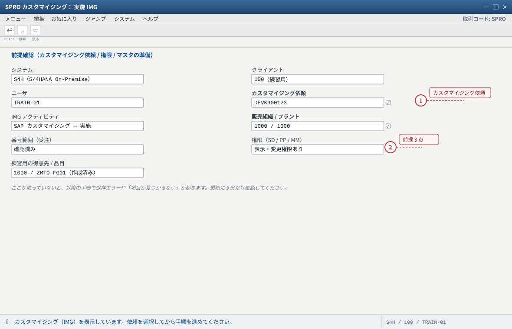
- 1 依頼を指定しないと保存できない（未指定なら最初に作る）
- 2 ① 依頼 ② SPRO 権限 ③ 番号範囲 —— この 3 点だけ先に確認
手顺の中の SPRO パスは日本語表記です。環境によってノード名が違う場合があるため、T-code を直接入力するのが速く確実です。
前提与环境确认
VA01・BP/XD03・MMNR・VN01- 目的
- 避免「练习跑到一半才发现基础组织构造或主数据缺失」。
输入值 / 确认对象
販売組織 1000 / 販売チャネル 10 / 部門 00 （販売エリア） プラント 1000 / 出荷プラント 1000 得意先 1000（受注先・出荷先を兼ねる。得意先マスタに 販売エリアビュー + 出荷先あり） 品目タイプ FERT（完成品）/ ROH・HAWA（部品）の品目番号範囲が「内部採番」or 有効な外部番号 受注 / 出荷 / 請求 / 製造指図 の 番号範囲に空きがある
- 贩卖区域：
VA01→ 初期画面で 販売組織1000/ 販売チャネル10/ 部門00が選べること（选不到 → 组织构造分配未做）。按「受注伝票」进入后不必保存，返回即可。 - 得意先：
BP（S/4HANA 的业务合作伙伴）或XD03→ 得意先1000：确认「販売エリア」ビュー（販売組織/チャネル/部門）与「出荷先（船積先）」已建，得意先グループ・支払条件有值。 - 品目番号範囲：
MMNR（品目マスタの番号範囲）确认FERT的区间可用；VN01确认受注明細范围可用。 - 权限：能否执行
SPRO、MM01、VA01、MIGO、CO01/CO08、VL01N、VF01。做不到的事务码提前记录，练习时改用「照着手顺读结果」的方式。
VA01 能进入输入画面并看到 販売エリア = 1000/10/00，即前提基本满足。不要在 C0 阶段就保存受注；真正的受注在 练习① 做。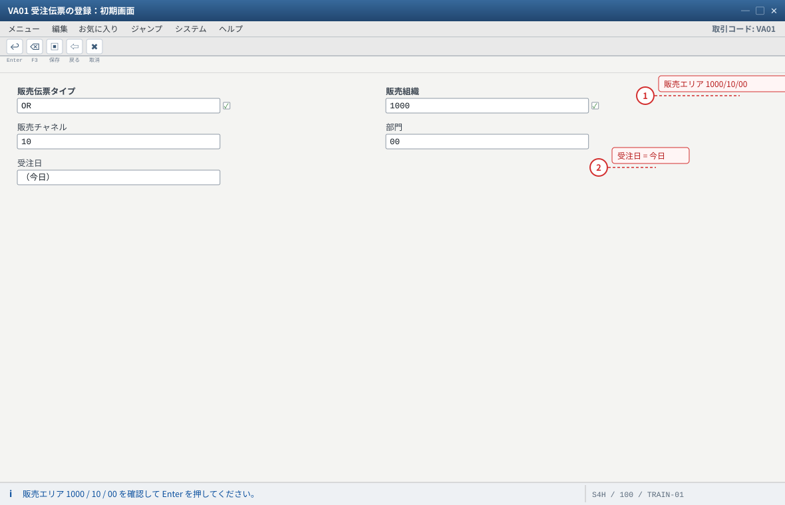
- 1 販売エリアはここで選べる必要がある。選べない＝組織構造の割当が未完了で、以降の全練習が止まります
- 2 受注日は納期計算の起点。練習では今日を使う（納期は +30 日）
配置前の準備：SPRO（カスタマイジング）が開けること、カスタマイジング依頼に書き込めることを先に確認します。自システムでの確認：MMNR（品目番号範囲）・VN01（受注明細番号範囲）に空きがあること。
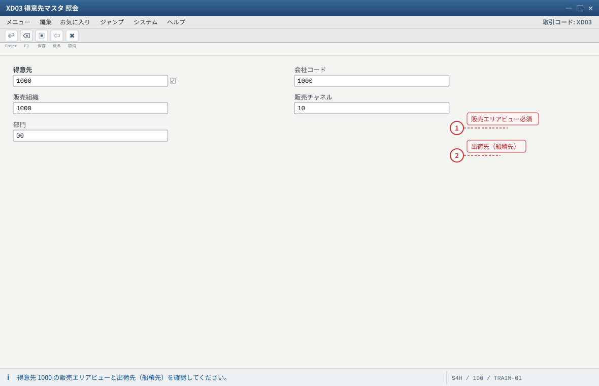
- 1 販売エリアビューが無いと VA01 で得意先を入力した瞬間にエラーになります
- 2 出荷先（船積先）が未登録だと VL01N が出荷伝票を作れません（未指定なら受注先が使われる）
自システムでの確認：BP（S/4HANA では業務パートナ）でも同じ得意先を表示できます。練習① までの前提は「VA01 が初期画面まで進めること」だけです。
部品品目（ZMTO-RM01 / ZMTO-RM02）
MM01 / MM02- 目的
- 让完成品有可出库的部品（BOM 组件）。本教程为了让流程聚焦在受注生産，用初期库存充足部品需求（部品不跑采购），购买流程留作发展课题。
输入值
| 项目 | ZMTO-RM01（板材） | ZMTO-RM02（紧固件） | 视图 |
|---|---|---|---|
| 品目タイプ / 単位 | ROH / PC | HAWA / PC | 基本データ1 |
| 品目グループ | 任意（例 001） | 任意 | 基本データ1 |
| 購買グループ / 調達タイプ | 001 / 外部調達 | 001 / 外部調達 | 購買 |
| MRPタイプ / ロットサイズ / 手配タイプ | PD / EX / F | PD / EX / F | MRP1 |
| 評価クラス / 価格管理 | （例）3000 / S | （例）3000 / S | 会計1 |
| 初期在庫（練習用） | 100 PC（移動タイプ 561 で入庫） | 500 PC（561） | MIGO/MB1C |
MM01→ 品目ZMTO-RM01→ 産業コード（例M）→ 品目タイプROH→ ビュー选择：基本データ1・2 / 購買 / MRP1〜4 / 会計1 / 原価計算1 / プラント在庫 / 保管場所 → プラント1000、保管場所（例0001）。- 各视图按上表输入，戦略グループは空（見込生産品と同じ扱いで構わない）、MRP4 の 個別/包括所要量 も空のままで OK（部品は受注在庫にしない）。
- 保存 → 同様に
ZMTO-RM02を登録。 - 初期库存：
MIGO（またはMB1C）→ 移動タイプ561（初期在庫投入）→ 品目/プラント/保管場所/数量を入力 → 転記。练习环境也允许用MBST做测试用途的取消，出错时不必慌。
MMBE → 品目 ZMTO-RM01 / プラント 1000：非限制使用（自由在庫）100 PC。MB52 也能看到这一行。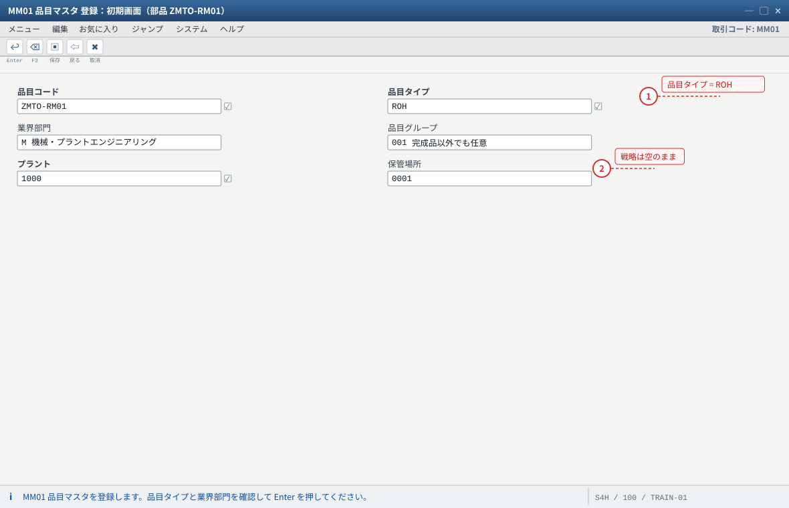
- 1 部品は ROH（原材料）。完成品の FERT と分けておくと番号範囲と所要量の扱いが整理できます
- 2 部品は受注在庫にしない：戦略グループ・個別/包括所要量は空のままで OK（見込生産品と同じ扱い）
自システムでの確認：ZMTO-RM02 は HAWA（商品）で登録します。ビューは 基本データ1・2 / 購買 / MRP1〜4 / 会計1 / 原価計算1 / プラント在庫 / 保管場所。
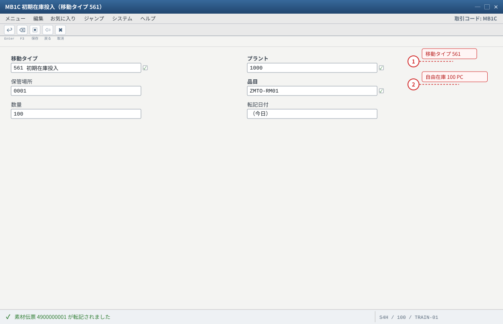
- 1 561 は「初期在庫投入」専用。受注在庫 E ではなく自由在庫（プラント在庫）に入ります
- 2 部品在庫は 261（指図への出庫）で減ります。練習③ で 100 → 80 PC になります
自システムでの確認：MIGO では操作「その他の入庫」＋移動タイプ 561 でも同じことができます。投入後は MMBE / MB52 で 100 PC を確認してください。
完成品品目 ZMTO-FG01（本教程最关键的一张主数据）
MM01 / MM02 / MM03- 目的
- 三个视图决定 MTO 的成立：MRP3 の戦略グループ
20（→ 所要量タイプ・所要量クラス）、MRP4 の 個別/包括所要量 = 個別所要量のみ（→ 受注在庫 E）、販売組織2 の 品目カテゴリグループ（→ 明細カテゴリ決定）。
输入值（品目 ZMTO-FG01 / FERT / PC）
| 视图 | 项目 | 值 | 为什么 |
|---|---|---|---|
| 基本データ1 | 品目グループ / 単位 | 001 / PC | — |
| 販売組織1 | 販売組織 / 販売チャネル / 部門 | 1000 / 10 / 00 | 受注可能な販売エリア |
| 販売組織2 | 品目カテゴリグループ | 0001（NORM） | VOV4 の決定キー。练习⑤ で Z001 に切り替えて ZTAK を決定させます |
| 販売組織2 | 品目統計グループ / 税区分 / 数量単位 | 1 / （例）MWST 0% or 10% / PC | 価格・請求に必要 |
| MRP1 | MRPタイプ / MRPコントローラ / ロットサイズ | PD / 001 / EX | MRP 対象 ＋ 受注数量単位で計画手配を作る |
| MRP1 | 手配タイプ / 特殊調達タイプ | E（内製）/ 空 | 内製＝製造指図。空にすると計画手配が生成されません |
| MRP1 | バックフラッシュ | （練習用）1 or 空 | ON にすると CO11N で部品が自動出庫（练习③ 的选项） |
| MRP2 | 伝票タイプ（指図タイプ） | PP01 | 製造指図タイプ |
| MRP2 | 入庫処理時間 / 安全在庫 | 0 / 0 | 简化纳期计算（教学用） |
| MRP3 | 戦略グループ / 在庫確認 | 20 / 02 | 受注生産（組立指図なし）＋ 個別所要量ベースの ATP |
| MRP4 | 個別/包括所要量 | 1（個別所要量のみ） | 受注在庫 E を成立させる必須項目 |
| 会計1 | 評価クラス / 価格管理 | （例）7920 / S | 受注在庫が評価される場合の金額の出どころ |
| 原価計算1 | 原価計算ロットサイズ / 原価計算バリアント | （例）EX / 标准 PP 用 | 指図の標準原価（差异计算的基准） |
MM01→ZMTO-FG01/ 産業コードM/ 品目タイプFERT→ 视图全选（基本1・2 / 購買（空でも可）/ MRP1〜4 / 会計1 / 原価計算1 / プラント在庫 / 販売組織1・2）。- 按上表逐视图输入。碰到「項目が見つからない」 → 该视图未选或字段被隐藏，检查视图选择与字段状态（
OMS9等）。 - 保存 →
MM03复查三个核心字段：販売組織2 品目カテゴリグループ / MRP3 戦略グループ / MRP4 個別・包括所要量。
MM03 → MRP4：個別/包括所要量 = 1（個別所要量のみ）。②
MM03 → MRP3：戦略グループ = 20。用 OPPJ 打开戦略グループ 20，确认它指向的所要量タイプ（通常 KE）与 計画方針（受注生産）。③
OPPS 显示計画方針 20，里面能看到所要量タイプ的分配。若你系统里的 20 定义与本文不同（例如指向不同所要量タイプ），以你系统的为准，并在练习中记录差异——这正是本教程强调的「以机制为准」。
ND → MRP 不生成计划手配；② 手配タイプ空 → 同上；③ MRP4 個別/包括所要量 空 → 需求成立但入不了受注在庫；④ 戦略グループ空 → 走 OVZI 的兜底决定（明細カテゴリ + MRPタイプ），受注在庫往往不成立。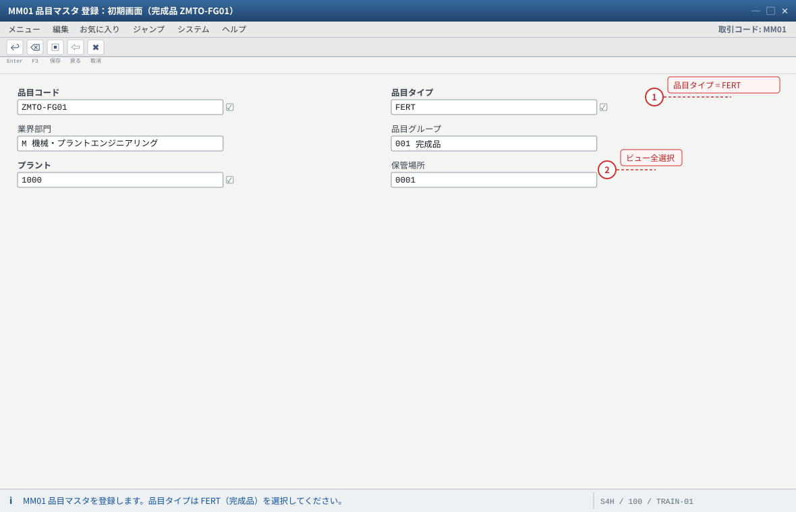
- 1 FERT 以外だと受注在庫の対象になりません。MTO の完成品はここが起点
- 2 ビューは 基本1・2 / 購買 / MRP1〜4 / 会計1 / 原価計算1 / プラント在庫 / 販売組織1・2 を選択
自システムでの確認：品目タイプ FERT に受注在庫の可否が設定されているかはカスタマイジング（品目タイプ）で確認します。
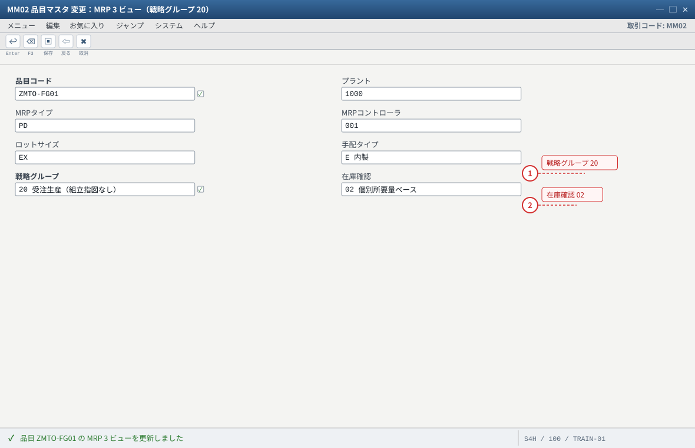
- 1 戦略グループ 20 が MTO の入口。ここから所要量タイプ KE（＝所要量クラス 040）が決まります
- 2 在庫確認 02 は個別所要量ベースの ATP（受注在庫と自分の入庫だけで回答）
自システムでの確認：OVZG で 020 → KE → 040 の対応を確認できます（C10/C11）。
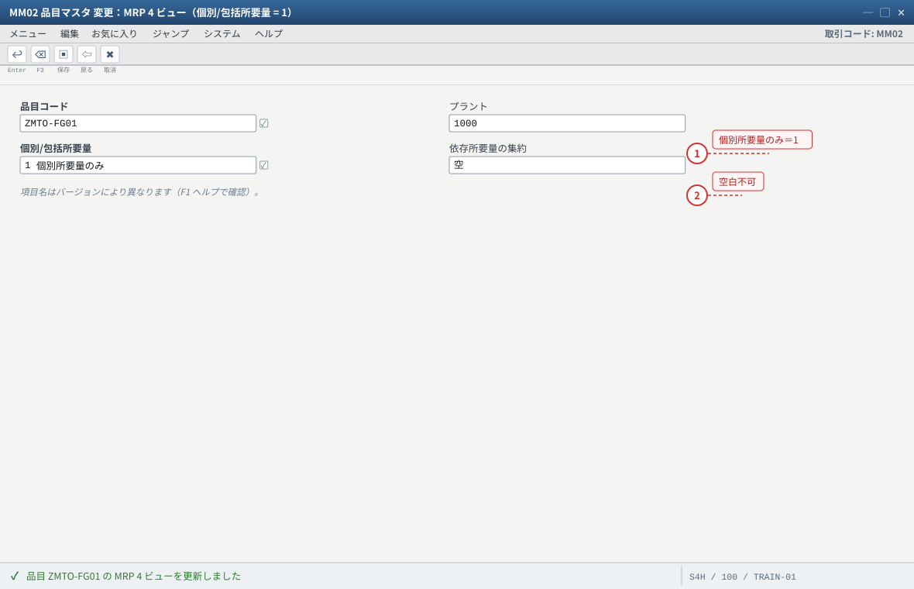
- 1 ここが 1 でないと計画手配が自由在庫（プラント在庫）で生成され、MTO が崩れます
- 2 空（包括所要量）のままにすると受注在庫 E は成立しません
自システムでの確認：MM03 で 販売組織2 の品目カテゴリグループ（0001 → 練習⑤ で Z001）と合わせて3点セットで見直してください。
BOM・作業区・作業手順（PP 主数据）
CS01・CR01・CA01输入值
BOM（CS01） : 親品目 ZMTO-FG01 / プラント 1000 / 用途 1（生産）
明細 0010 ZMTO-RM01 数量 2 PC
明細 0020 ZMTO-RM02 数量 8 PC
作業区（CR01） : ZMTO_WC01「組立作業区」（プラント 1000 / 原価センタ 任意 / 能力 8H/日）
作業手順（CA01） : 品目 ZMTO-FG01 / プラント 1000 → 工程 0010「組立」/
作業区 ZMTO_WC01 / 標準時間 1 H / 数量単位 PC
CS01：親品目ZMTO-FG01、プラント1000、BOM 用途1、有効日 = 今日 → 明細 2 行输入部品与数量 → 保存（会要求番号，通常内部採番）。CR01：作業区ZMTO_WC01→ プラント1000→ 基本データ（作業区カテゴリ 0001）→ 能力（Cap. 8H）→ 保存。CA01：品目ZMTO-FG01/ プラント1000→ 工程 0010、作業区ZMTO_WC01、作業内容「組立」、標準時間 1H → 保存。- 确认：
CS03（BOM 表示）、CA03（手順表示）能正常打开。
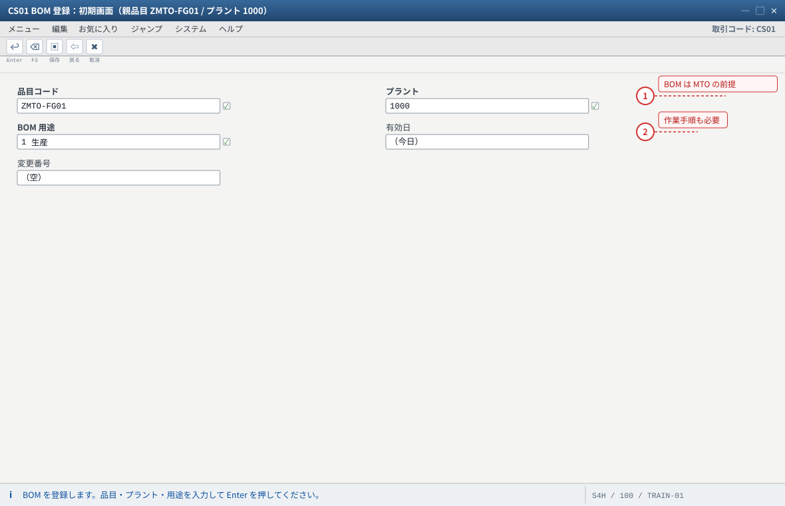
- 1 MRP は BOM を展開して部品の計画手配・予約を作ります。BOM が無いと部品需要が出ません
- 2 手配タイプ E（内製）でも、作業手順が無いと標準時間と差異の基準がありません
自システムでの確認：作業区は CR01（例 ZMTO_WC01 / プラント 1000・能力 8H）、作業手順は CA01（品目 ZMTO-FG01 → 工程 0010「組立」/ 作業区 ZMTO_WC01 / 標準時間 1H）。CS03・CA03 で表示確認。
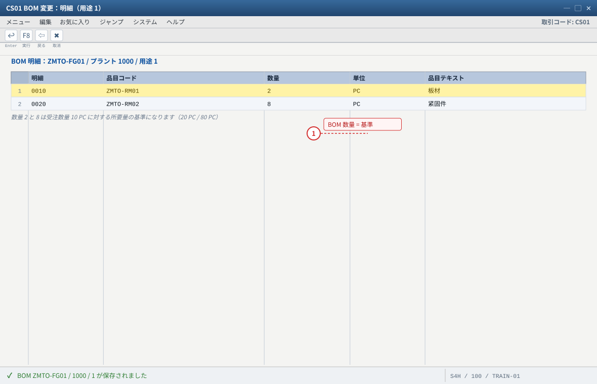
- 1 部品数量は受注数量に比例。誤ると CO03 の構成品目と 261 出庫数量がずれます
自システムでの確認：CS03 で BOM、CA03 で作業手順を表示できます。
価格条件（让练习④ 的请求有金额）
V/06・V/08・VK11输入值
条件タイプ（V/06） : PR00（標準の価格条件タイプ。確認のみ）
計算手続（V/08） : 標準の受注用計算手続を使用（確認のみ）
条件レコード（VK11）: 条件タイプ PR00 / 販売組織 1000 / 販売チャネル 10 / 得意先 1000
品目 ZMTO-FG01 / 金額 12,000 JPY / 1 PC / 有効期間 今日〜+1年
VK11→ 条件タイプPR00→ 得意先（または品目）レベルを选择 → 上表の値を输入 → 保存。- 确认：
VK13（条件レコードの照会）→ 得意先1000/ 品目ZMTO-FG01で 12,000 JPY が見えること。
MWST）也建议一并确认。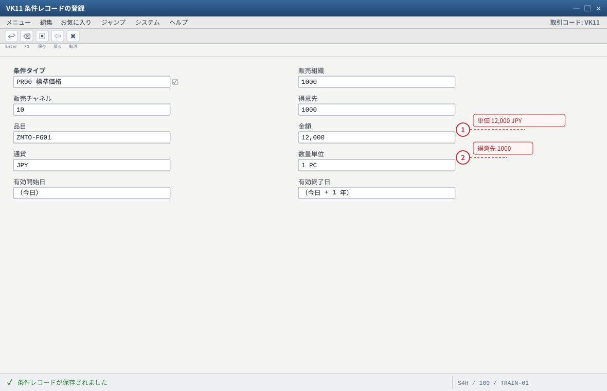
- 1 この条件レコードが無いと練習④ の請求金額が 0 になります（受注は保存できてしまうので後で困る）
- 2 得意先レベルで登録すると、どの受注でも同じ値を引けます
自システムでの確認：条件タイプの計算手続は V/08、条件タイプ自体の定義は V/06 です。税区分は 販売組織2（MM02）の設定に従います。
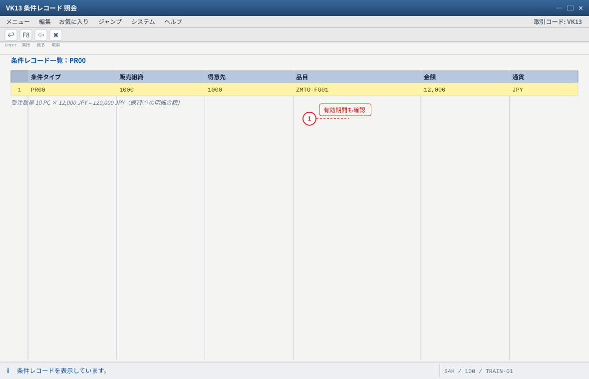
- 1 見えないときは有効期間と販売エリアの指定を確認してください
自システムでの確認：税区分（例 MWST 10%）は MM02 の販売組織2 で決まります。
明細カテゴリグループの確認と追加
SPRO（IMG）- IMG 路径（日本語）
- 販売管理 > 販売伝票 > 販売伝票明細 > 定義: 明細カテゴリグループ
- 目的
- 明細カテゴリ決定 4 键中的 1 键（来自品目マスタ 販売組織2 的字段）。这里定义的是「组」，本身的字段只有 キー + 説明。
- 进入上述 IMG 节点（或 SPRO 搜索框输入「明細カテゴリグループ」）。
- 先看现状：记录标准里已有的键（通常可见
0001标准、0002、0004，以及NORM/DIEN/LEIS/ERLA/LUMF这类的文字键）。你系统里到底有哪些，以这一屏为准。 - 新增一行：キー
Z001、説明「受注生産品（練習用）」。保存到你的カスタマイジング依頼。
NORM（标准品）、DIEN（サービス）、LEIS（納入関連サービス）、ERLA（設定可能製品ヘッダ）、LUMF（設定可能製品の構成品目）。
SAP 并没有一个专门叫「受注生産」的标准组；普通 MTO 用 0001/NORM 也能实现（受注在庫 E 由 MRP3/MRP4 与所要量クラス决定）。
要靠明細カテゴリ来区分受注生産明细时，通常就是像我们这样自建一个组。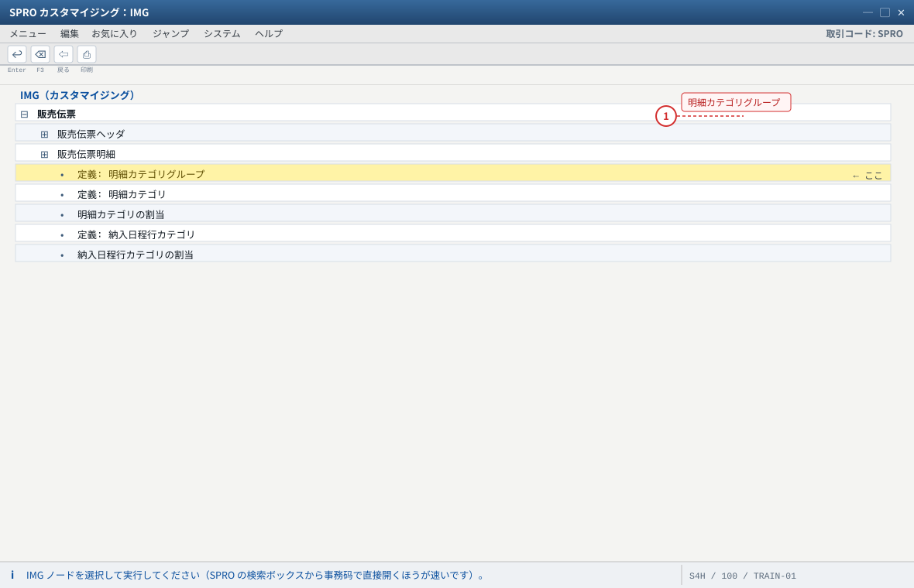
- 1 明細カテゴリ決定の 4 键の 1 つ（品目マスタ 販売組織2 の品目カテゴリグループ）がここで定義されます
自システムでの確認：カスタマイジング依頼（変更要求）に書き込めないと保存時にエラーになります。依頼番号は先に決めておきましょう。
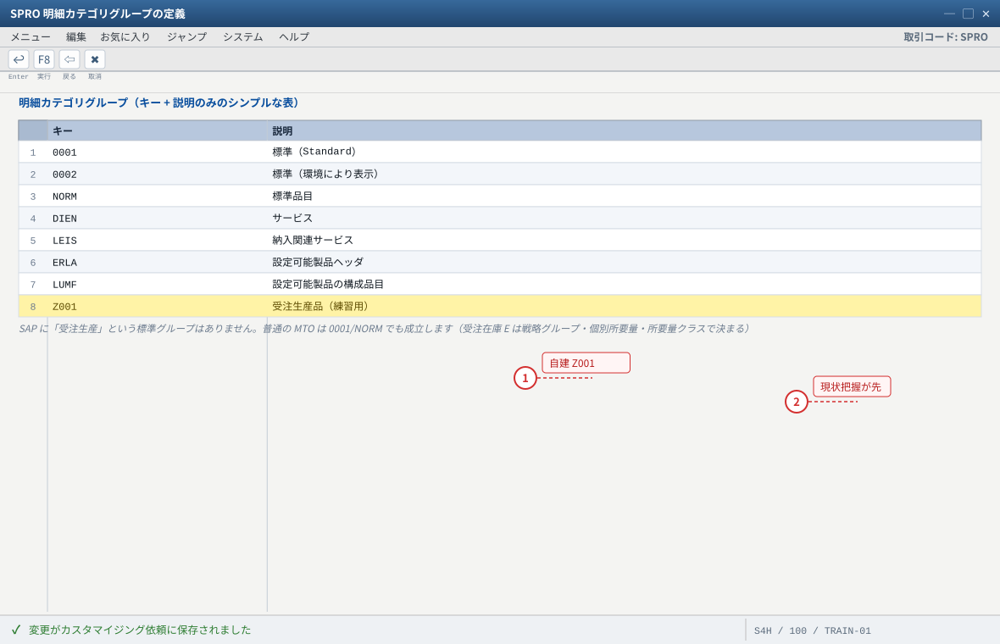
- 1 Z001 は練習⑤ で明細カテゴリ ZTAK を決定させるためのキー。品目マスタ 販売組織2 の値をこれに切り替えて使います
- 2 表示される標準キーは環境で異なります。まず現状を記録してください
自システムでの確認：この画面に並ぶキーは環境ごとに違います（標準は 0001/NORM 系）。表の名前（TV*）は SE16N で調べられます。
明細カテゴリ的确认与新增 ZTAK
VOV7- IMG 路径
- 販売管理 > 販売伝票 > 販売伝票明細 > 定義: 明細カテゴリ（事务码
VOV7） - 目的
- 决定「这一行明细」的行为：是否定价、是否允许纳期行、是否请求相关、特別在庫区分（E） 等。
VOV7→ 输入TAN→ 「詳細」：先读标准。确认以下项目（字段名可能因版本不同，用 F1 看帮助）：
・品目タイプ = 標準品目 ・価格設定 =X（標準） ・納入日程行許可 = ON ・請求関連 = ON ・特別在庫 = 空（标准 TAN 不带特在区分）。- 回退到一览 → 光标放在
TAN→ 「コピー（Copy as…）」→ 新キーZTAK、说明「受注生産明細（練習用）」。 - 在
ZTAK中按下列值修改并保存：
品目タイプ : 標準品目（Material と同じ） 価格設定 : X（標準の価格設定を実施） 納入日程行許可 : ✓（必须。OFF にすると納期行が作られず MRP に需要が届かない） 請求関連 : ✓ 特別在庫（SOBKZ） : E ← 本练习的核心：明細が受注在庫に紐づく 購買関連 / 構造範囲 : 空 / 空（BOM 参照は使わない） 明細テキスト決定手続 : 任意（例 0001） 完了ルール : 空
VOV7 → ZTAK → 詳細 を再表示：特別在庫 = E になっている；②
SE16N 里可以核对底层表 TVAP（明細カテゴリ）的 SOBKZ 字段是否为 E（TVAP 确实有 SOBKZ「Special Stock Indicator」字段）；③ 标准
TAK 是否在你系统里存在？——很多系统没有。SAP Note 2708455 明确说「TAK 不是 SAP 标准定义」，所以本文用自建 ZTAK，避免依赖不存在的标准对象。MSKA（特别库存数量表），「需求」落在 VBBE。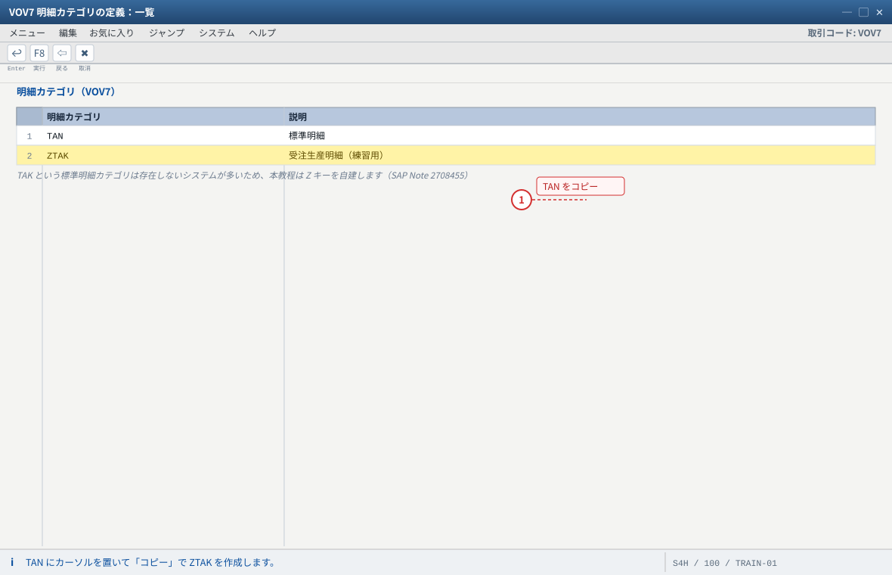
- 1 コピー元は標準 TAN。ZTAK はここから作ると他の項目を壊しません
自システムでの確認：表 TVAP（明細カテゴリ）の SOBKZ フィールドが特別在庫区分です。SE16N で ZTAK を検索して E を確認できます。
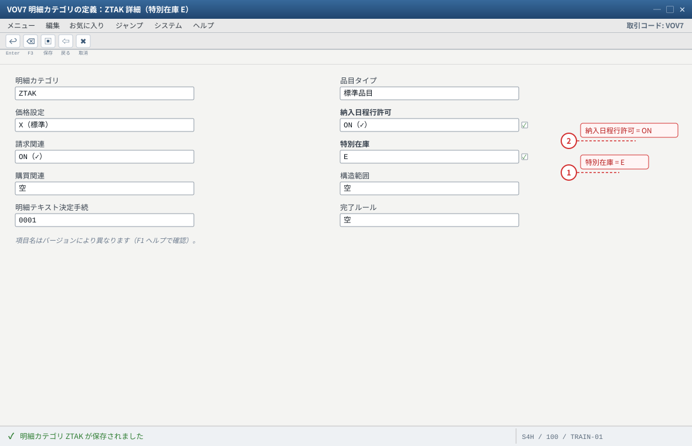
- 1 特別在庫 E ＝ この明細の在庫が受注在庫（得意先在庫）になる、という宣言です
- 2 納入日程行許可を OFF にすると納期行が作られず、MRP に需要が届きません
自システムでの確認：SE16N → TVAP で SOBKZ = E を確認。日中は「特別在庫」、英語では Special Stock Indicator です。
明細カテゴリの割当（4 键决定）
VOV4- IMG 路径
- 販売管理 > 販売伝票 > 販売伝票明細 > 明細カテゴリの割当（
VOV4） - 决定キー（4 键）
- ① 販売伝票タイプ（
OR）② 品目カテゴリグループ（品目マスタ 販売組織2 =Z001）③ 用途（明細用途，本例 空）④ 上位明細の明細カテゴリ（本例 空）
VOV4→ 进入后先读标准：你会看到类似 OR + NORM + （空）+（空） → TAN 这样的行。理解「4 个字段都是键，空值也参与匹配」。- 「新規エントリ（New Entries）」→ 输入：
・販売伝票タイプOR② 品目カテゴリグループZ001③ 用途 空 ④ 上位明細 空 → 明細カテゴリ 自动提案 =ZTAK。 - 同一行的「手動選択可能な明細カテゴリ（代替明細カテゴリ）」栏里，把
TAN也加上（练习时便于手动切换比较）。 - 保存。
VOV4 中能看到新行；② 实测才是硬道理：把品目 ZMTO-FG01 的品目カテゴリグループ在 MM02 改成 Z001 → 新建一张受注，明细的明細カテゴリ应自动变成 ZTAK（见 练习⑤ 课题）；
③ 若要退回标准做法，把品目改回 0001 即可（标准 OR + NORM → TAN 仍有效）。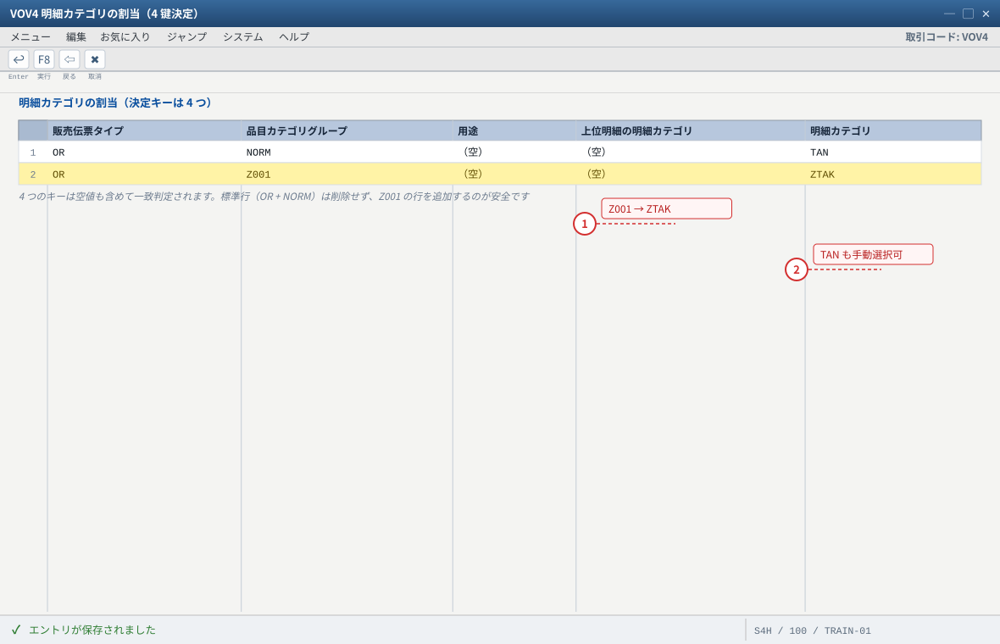
- 1 品目マスタ 販売組織2 の品目カテゴリグループが Z001 の品目だけが ZTAK を引きます
- 2 代替明細カテゴリに TAN を入れておくと、練習中に手で切り替えて比較できます
自システムでの確認：標準側の組み合わせ（OR + NORM → TAN など）は環境により異なります。
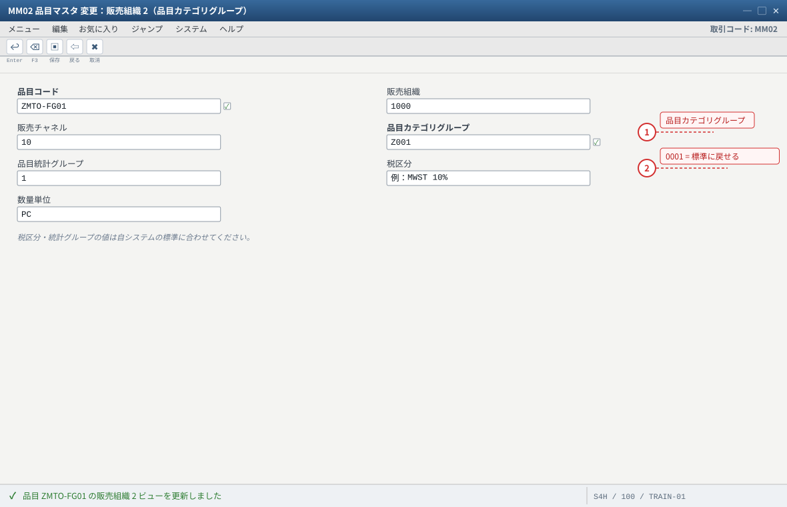
- 1 ここを Z001 にすると、次に作る受注の明細カテゴリが自動で ZTAK になります（練習⑤ の課題）
- 2 元に戻すときは 0001 に戻すだけ。標準の OR + NORM → TAN は残っています
自システムでの確認：変更は新規明細にのみ効きます。既存受注明細の明細カテゴリは変わりません。
納入日程行カテゴリ的确认与新增 ZCP
VOV6- IMG 路径
- 販売管理 > 販売伝票 > 販売伝票明細 > 定義: 納入日程行カテゴリ（
VOV6） - 目的
- 纳期行是「受注需求进入 MRP 的入口」：所要量転送 决定 MRP 是否看得到；在庫確認（ATP） 决定纳期确认；移动タイプ/購買発注 相关则决定后续物料动作。
VOV6→ 逐一打开CN、CP，比较这两个标准纳期行类别的项目。把差别记下来（例：CN偏标准受注（含在庫確認），CP常被用于「MRP 関連あり・在庫確認なし」的受注纳期）。实际字段值以你系统为准，用 F1 看每个字段的帮助。- 复制
CP→ 新键ZCP、说明「受注生産用納入日程行（練習用）」，按下列要点确认/设置：
所要量転送（BEDSD） : ON ← 受注の需要を MRP に渡す（OFF だと MD04 に何も出ない）
※ 選択肢に「同時に組立指図を開始」がある場合、戦略 82（組立処理）ではそれを選ぶ
在庫確認（ATPPR） : OFF（本练习首要目标是 MRP 需求传递）／想同时练 ATP 则 ON
納入関連（LFREL） : ✓（出荷対象）
購買発注関連（EBANF 等） : 空（内製のため。外注/第三社処理の練習時のみ ON）
移動タイプ（BWART） : 空（受注在庫の入出庫は指図側で制御）
所要量タイプ（BDART） : 空 ← 空にすると「戦略グループ／OVZI」による自動決定が効く
SE16N → TVEP（納入日程行カテゴリの表）→ 输入 ZCP，看 BEDSD / ATPPR / BDART 的值；② 用
VOV6 的 F1 逐一确认字段含义——这比背值更有用（考试与现场都靠它）。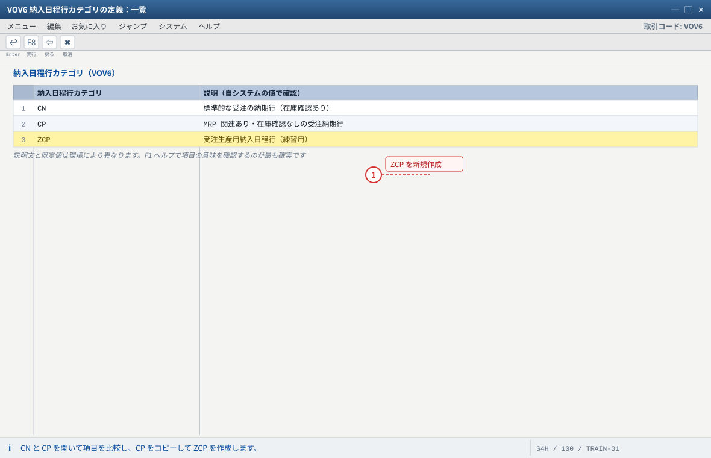
- 1 ZCP は「所要量転送 ON・在庫確認 OFF」で受け需求を MRP に渡すのが目的です
自システムでの確認：表 TVEP（納入日程行カテゴリ）。SE16N で ZCP の BEDSD / ATPPR / BDART を見られます。
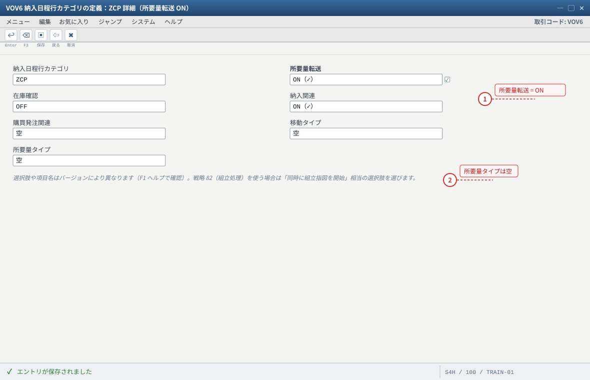
- 1 所要量転送を OFF にすると、受注は保存できても MD04 に需要が出ず MRP が動きません（最頻出のつまずき）
- 2 所要量タイプを空にすると、戦略グループ 20 からの自動決定が効きます
自システムでの確認：SE16N → TVEP で BEDSD（所要量転送）・ATPPR（在庫確認）・BDART（所要量タイプ）の値を確認できます。
納入日程行カテゴリの割当（2 键决定）
VOV5- IMG 路径
- 販売管理 > 販売伝票 > 販売伝票明細 > 納入日程行カテゴリの割当（
VOV5） - 决定キー
- ① 明細カテゴリ（
ZTAK）② MRPタイプ（品目マスタ MRP1 =PD）
VOV5→ 先读标准：找到TAN的行，看它指向哪个纳期行类别（常见的默认组合会涉及CN/CP，具体以你系统为准）。- 新增：明細カテゴリ
ZTAK+ MRPタイプPD→ 納入日程行カテゴリZCP。保存。 - 顺便记录：若同一品目将来改用别的 MRP タイプ（如
VB），需要在 VOV5 里补对应行，否则纳期行会取到默认或空白类别。
VA03 → 明細 → 納入日程行 里确认用到的是 ZCP（而不是标准 CN）——这就是 C6/C7/C8/C9 四步配置的成果。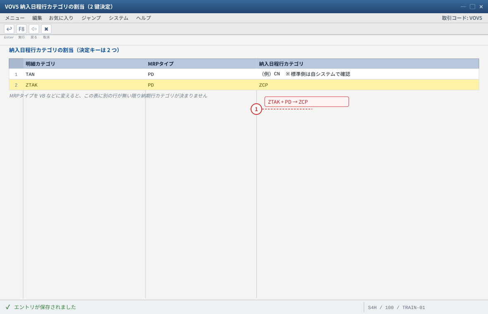
- 1 受注明細が ZTAK なら納期行は ZCP になる。この 2 段の決定が C6〜C9 の成果です
自システムでの確認：VA03 → 明細 → 納入日程行で、実際に使われた納入日程行カテゴリが ZCP かどうかを確認します。
所要量クラス的确认（MTO 的开关面板）
OVZG- IMG 路径
- 販売管理 > 基本機能 > 在庫確認と所要量転送 > 所要量転送 > 所要量クラスの定義（
OVZG） - 目的
- 所要量クラス才是真正装开关的地方：所要タイプ（独立/得意先所要量）、個別在庫（E）、MRP への転送、在庫確認、評価区分、原価計算の要否。
OVZG→ 显示（或経由 SPRO 进入「所要量クラス」节点）→ 用 F4 或直接输入编号查看040（受注生産の代表）与046（評価付販売伝票在庫、S/4HANA Cloud の MTO シナリオで使われる）。- 逐项读并记录：
・所要タイプ / 計画タイプ（得意先所要量か、独立所要量か）
・個別在庫（特別在庫 E を使うか）
・MRP への転送（所要量が MRP に見えるか）
・在庫確認（ATP を起動するか）
・評価区分（評価付 or 評価なし。評価付ならM＝販売伝票参照の個別評価）
・原価計算（B＝自動原価計算/マーキング 等） - （可选练习）复制
040→Z040，说明「受注生産（練習用）」，把「個別在庫」与「評価」按你想验证的方向调整后保存；之后在 C11 里让所要量タイプ指向它。
040 时能否看到「個別在庫」相关项目？这就是受注在庫是否成立的根因之一；② 若你的目标是「受注在庫要带金额」，请优先选择带評価区分 M 的所要量クラス（S/4HANA Cloud 的 MTO 用
046）；③ 找不到
046？在 OVZG 的列表里用 F4 浏览全部条目——不同版本/激活的解决方案会不一样。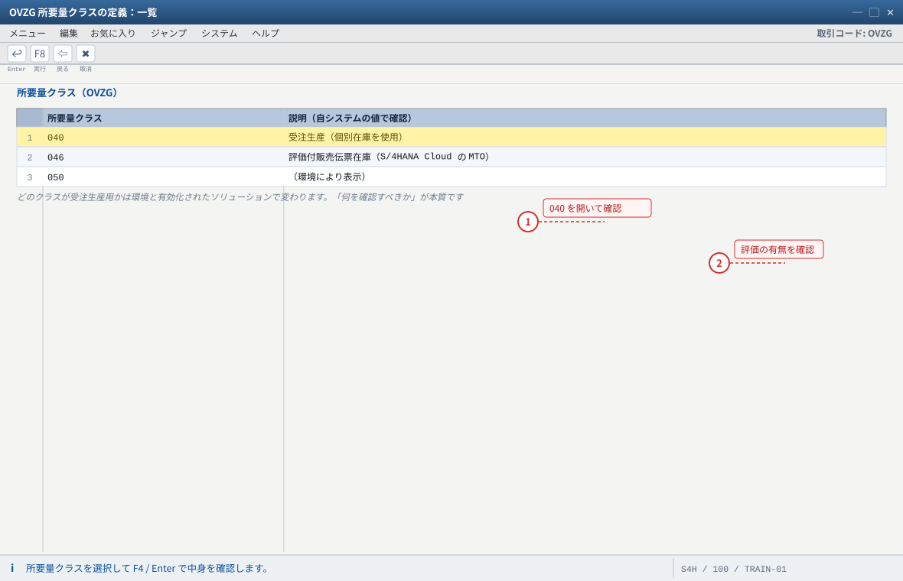
- 1 所要量クラスが「個別在庫（E）を使うか」「MRP へ転送するか」の実体です
- 2 受注在庫に金額を持たせるなら 評価区分 M のクラス（Cloud の MTO は 046）
自システムでの確認：F4 で全エントリを一覧できます。版本・有効化状況で標準値は変わります。
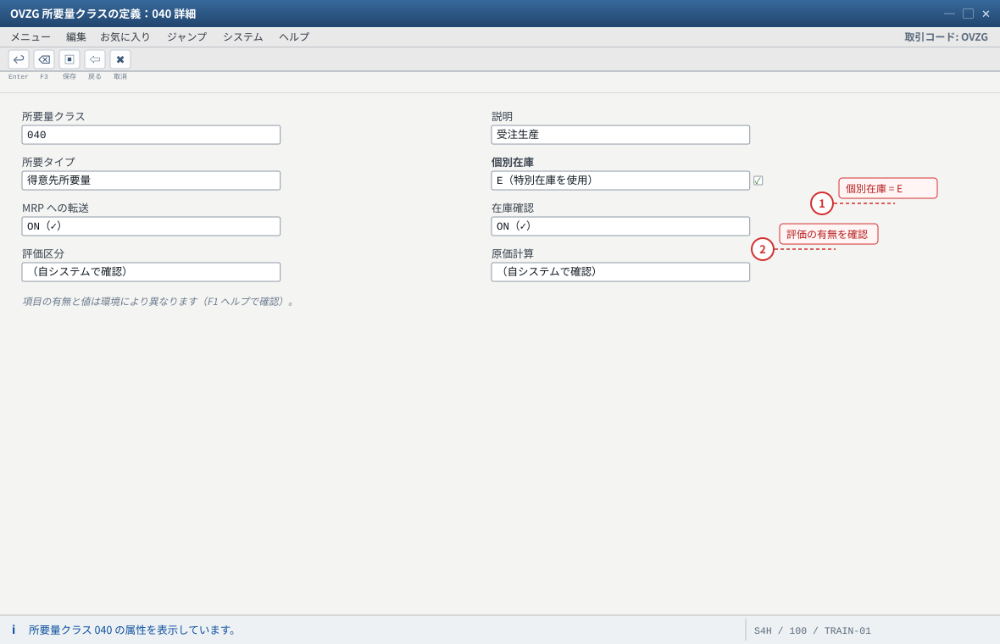
- 1 個別在庫が「受注在庫 E を使う」の根拠。ここが空だと計画手配が自由在庫に落ちます
- 2 評価区分が空だと受注在庫に金額が載りません。金額が必要なら 評価区分 M のクラス（Cloud の MTO は 046）を検討します
自システムでの確認：受注在庫に金額が欲しい場合は 評価区分 M のクラスを使ってください（Cloud の MTO は 046）。
所要量タイプ与它的决定顺序
OVZG・OVZI- IMG 路径
- 販売管理 > 基本機能 > 在庫確認と所要量転送 > 所要量転送 > 所要量タイプの定義（
OVZG同一区域）／ 明細カテゴリと MRP タイプを使用した所要量タイプの決定（OVZI） - 决定顺序（务必记住）
- ① 优先看品目マスタの戦略グループ（MTO は
20→ 所要量タイプKE）； ② 若没有戦略グループ，才用OVZI的 明細カテゴリ + MRP タイプ 组合决定。
- 打开
KE（受注生産の所要量タイプ）→ 确认它指向的所要量クラス（通常040）与说明。记录「KE → 040（→ 個別在庫 / 評価の設定）」这一条链。 - 打开
OVZI→ 观察标准的决定表：行键是「明細カテゴリ + MRPタイプ」，列里有所要量タイプ与「起点（origin）」类项目（值常见 0/1/2，控制「用这里的所要量タイプ」还是「交给戦略グループ决定」）。 - 找到与
TAN相关的行，读它指向的所要量タイプ与起点；再找与我们练习相关的行（若ZTAK尚未出现在此表中，说明标准路径下它仍会先看戦略グループ——这正是我们要的）。 - （可选）为
ZTAK追加一行：明細カテゴリZTAK+ MRPタイプPD→ 所要量タイプKE、起点 = 「戦略グループから決定」类。保存。这一行保证即使将来品目没有戦略グループ，也能拿到受注生産用の所要量タイプ。
VA03 明細詳細 → 納入日程行 的項目里能看到所要量タイプ；再对照 MM03 MRP3 の戦略グループ 20。两者能串起来（20 → KE）就说明你理解了这一层。最直观的验证仍是
MD04：出现「得意先所要量」＝所要量転送成功；其数值与受注数量一致＝所要量タイプ/クラス的传递正确。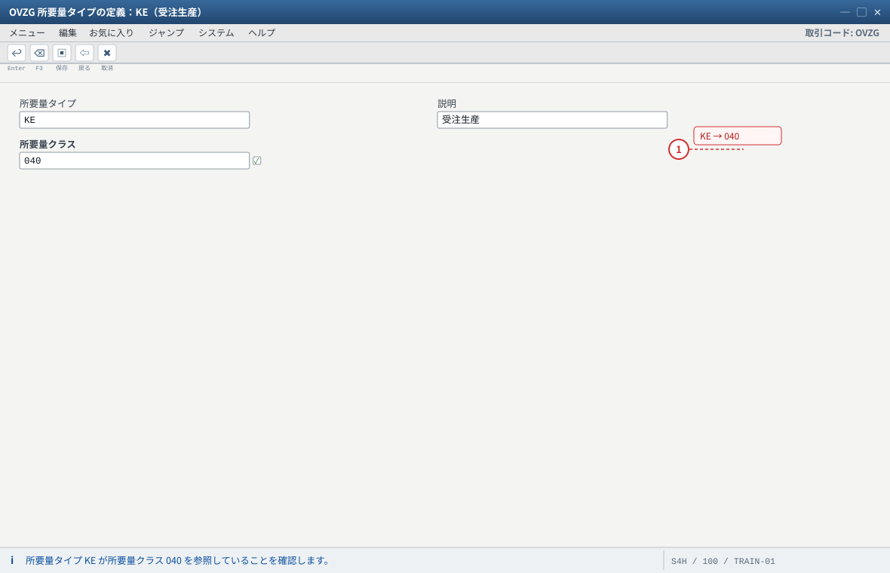
- 1 戦略グループ 20 → 所要量タイプ KE → 所要量クラス 040 という連鎖が MTO の背骨です
自システムでの確認：OVZG の一覧から F4 で所要量タイプを辿れます。KE の値は環境で同じとは限りません。
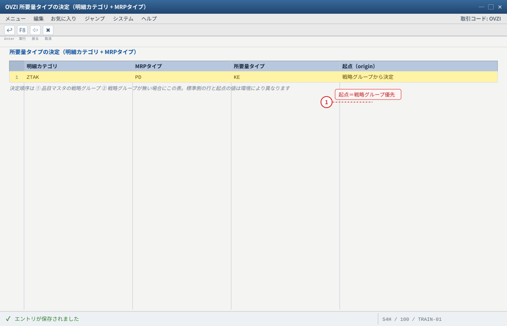
- 1 起点を「戦略グループから決定」にしておくと、品目に戦略グループがある限りそちらが優先されます
自システムでの確認：標準側の行（TAN など）がこの表に無い環境もあります。まず現状の表を読んで記録してください。
計画方針グループ／計画方針（20 与 82）
OPPJ・OPPS- IMG 路径
- 生産 > 資材所要量計画 > 計画 > 需要管理 > 計画方針 > 計画方針の定義（
OPPS）／計画方針グループの定義（OPPJ） - 目的
- 品目マスタ MRP3 上填的是戦略グループ（可包含多个計画方針），系统据此选出所要量タイプ。MTO 主线用
20；组立处理用82（练习⑤）。
OPPS→ 输入20→ 确认它分配的所要量タイプ（通常KE）与说明「受注生産（組立指図なし）」。同时确认该方針不使用計画独立所要量（PIR 不参与）。OPPJ→ 输入20→ 确认它包含的方針（通常就是 20 本身）。- 查看
OPPS的82（組立処理）：标准设定为 所要量タイプKMFA/ 所要量クラス201/ 指図タイプPP04（SAP Help「Special Settings for Production Orders」明确列出）。练习⑤ 会用它做「受注保存 → 指図自动作成」。
OPPS 用 F4 一览看到 20/25/82 等方針与它们的所要量タイプ对应关系，截图/记录即可（现场要件定义时常被问到「你们用哪个戦略」）。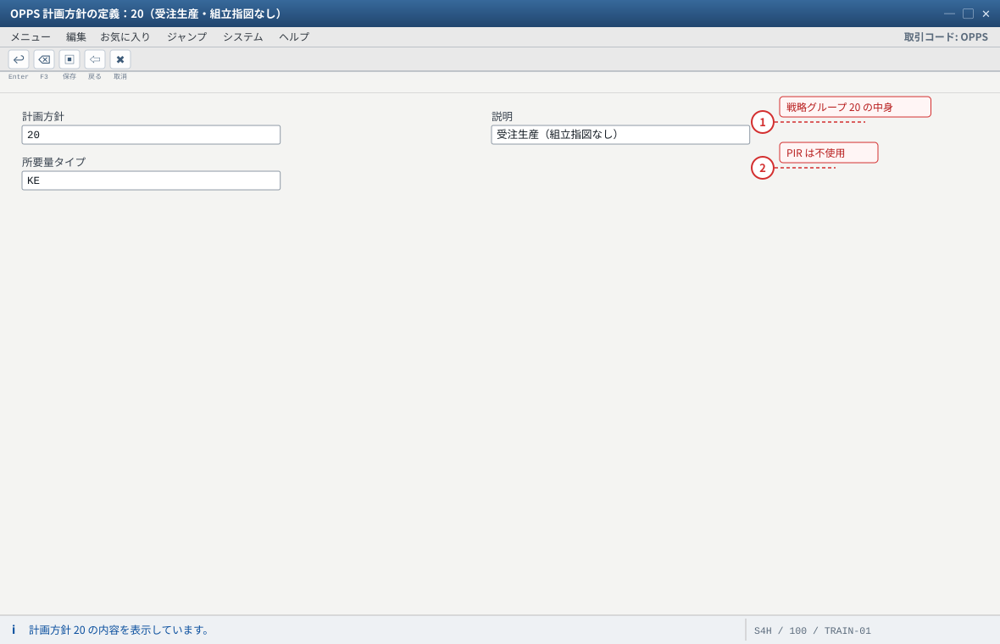
- 1 品目マスタ MRP3 の戦略グループに 20 を入れると、この方針が選ばれます
- 2 計画独立所要量（PIR）は使いません。PIR の行が出てきたら設定ミスを疑います
自システムでの確認：OPPS で F4 一覧を開き、20 / 25 / 82 などの方針と所要量タイプの対応を記録しておくと現場で役立ちます。
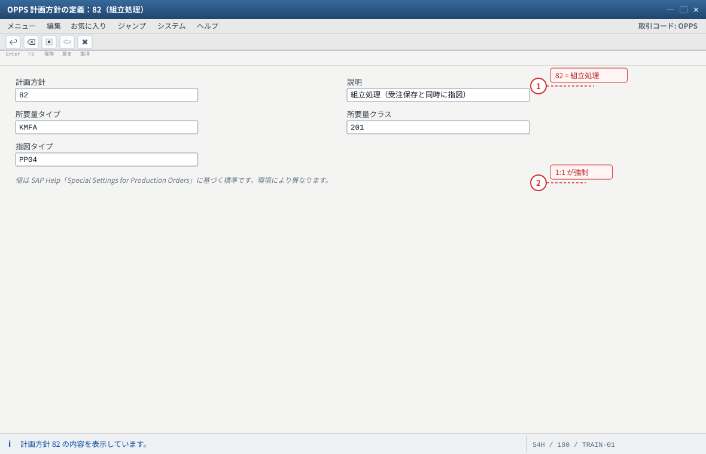
- 1 練習⑤ の発展 1 で使う方針。受注保存と同時に製造指図が作られます
- 2 1 受注明細 = 1 製造指図が強制されるのが 82 の特徴です
自システムでの確認：OPPJ で 計画方針グループ 82 が方針 82 を含むことを確認します。
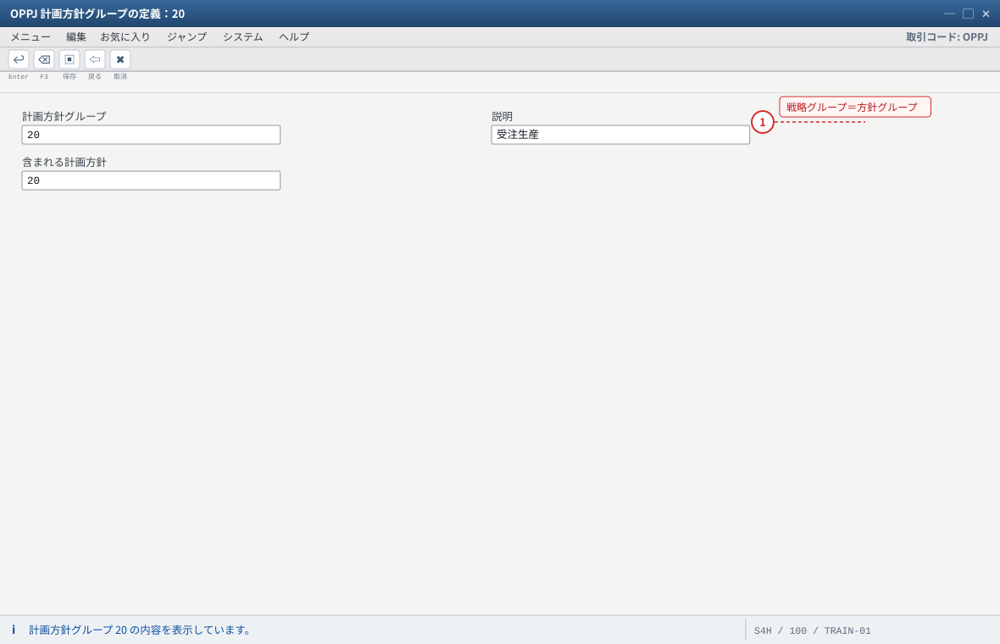
- 1 MRP3 の「戦略グループ」欄には方針ではなく、このグループを指定します
自システムでの確認：OPPJ の一覧で、受注生産用グループの番号が 20 かを確認してください。
在庫確認（ATP）
品目マスタ MRP3 + 所要量クラス- 目的
- 让受注保存时（或手动）能给出「能否在希望纳期交货」的答复。MTO 的 ATP 基础是個別所要量（自己这张受注的需求 vs 自己这张受注的入库）。
- 品目
ZMTO-FG01的 MRP3「在庫確認」设为02一类（個別所要量ベース。具体值用 F4 看帮助文本，选择描述里含「個別所要量」的项）。 - 确认所要量クラス（C10）里在庫確認是激活的（若关闭，纳期行不会做 ATP）。
- 确认检查范围/检查规则（在庫確認グループ/チェックルール的设定），决定「哪些要素参与检查」（例：是否把受注在庫 E 的入库预定、计划手配算作可用量）。
- 实战确认：
CO09（在庫確認概要 / ATP 一覧）输入品目ZMTO-FG01/ プラント1000，看可用量与要素明细。
注意：本教程的
ZCP 默认关掉了在庫確認（先聚焦 MRP 需求传递）；要练 ATP 时把它打开再测一次，体会两者差别。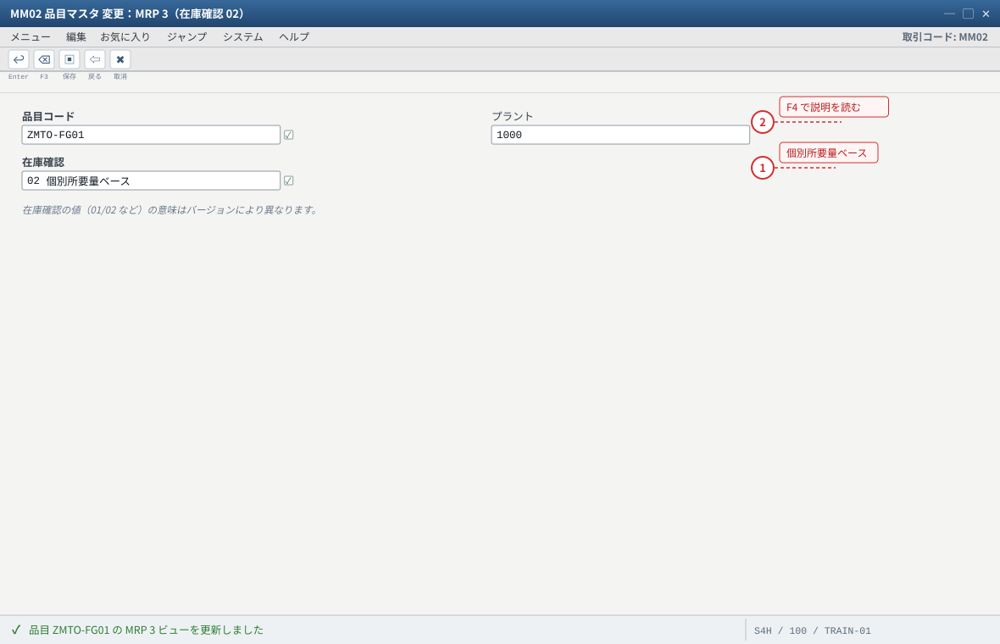
- 1 個別所要量ベースなので、自分の受注の入庫だけが自分の受注への回答に使われます
- 2 値を迷ったら F4 で説明に「個別所要量」を含む項目を選びます
自システムでの確認：本教程の ZCP は在庫確認 OFF（MRP 需求传递を優先）。ATP を練習するときは ON に切り替えて比較してください。
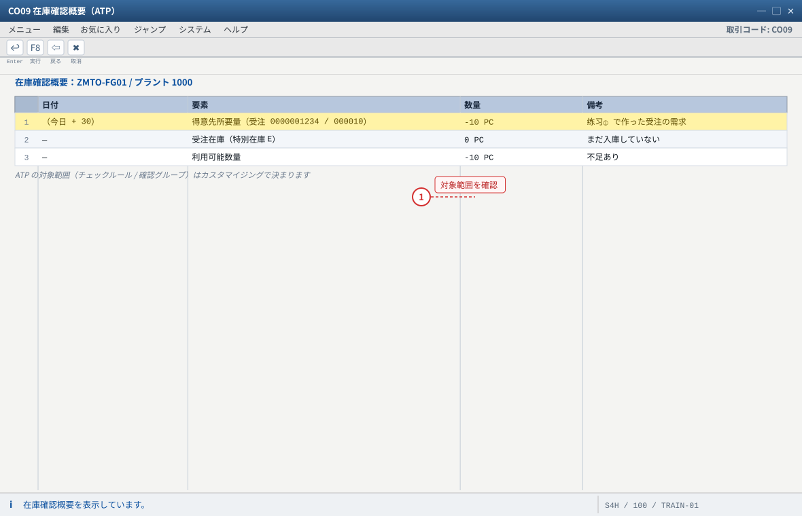
- 1 受注が出てこないときは在庫確認の対象範囲（チェックルール）を確認します
自システムでの確認：ZCP の在庫確認を ON にすると、納期行に確認済納入日付が入るようになります。
MRP タイプ・ロットサイズ・指図タイプ（PP 側の確認）
品目マスタ MRP1/MRP2MRPタイプ : PD（MRP 対象。ND は「計画なし」で受注生産には不適） ロットサイズ : EX（ロット単位＝受注数量単位で手配） 手配タイプ : E（内製） ※ F＝外部調達、X＝両方 指図タイプ : PP01（標準の製造指図タイプ）※ 受注明細参照の指図は CO08 / 計画手配の変換で作成 購買発注タイプ : NB（部品を購買で賄う発展課題でのみ使用）
MD04 を見て、計画手配が生成され、その「在庫区分」が受注在庫（E）になっているかを確認（指定した受注番号・明細が付いている）。
ここで自由在庫（プラント在庫）用の計画手配になっていたら、C2 の MRP4 個別/包括所要量 と C10 の所要量クラス（個別在庫）を疑います。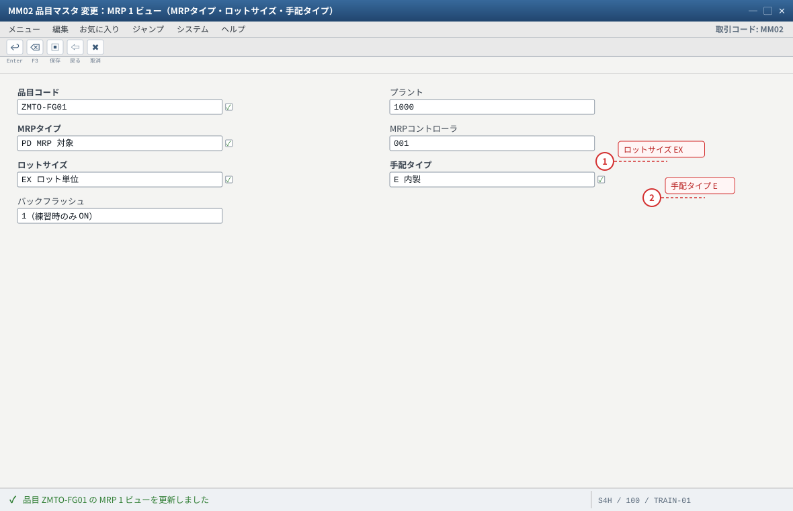
- 1 ロットサイズ EX は「受注数量単位で手配」。受注 10 PC に対して計画手配も 10 PC になります
- 2 手配タイプ E（内製）が空だと計画手配が生成されません
自システムでの確認：バックフラッシュを ON にすると CO11N の報工で部品が自動出庫されます（練習③ の選択肢）。ON なら 261 の手動出庫は不要です。
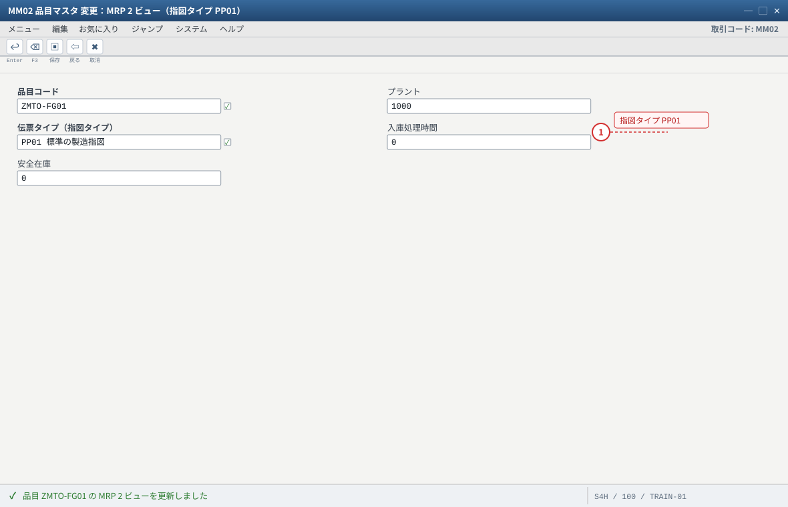
- 1 指図タイプ PP01 が、計画手配から変換される製造指図の種類になります
自システムでの確認：受注明細を参照する指図は CO08 / 計画手配の変換（CO40/CO41）で作られます。
出荷・請求の前提（确认即可）
VL01N・VF01・VTFL- 出荷：
VL01N能选择出荷タイプLF；品目/得意先/プラントから出荷ポイントが決定されること（決定されないと出荷伝票が保存できない）。 - 出荷の制御：
VL02N里能完成「ピッキング数量入力 → 出庫確認（PGI）」；PGI 的移動タイプは标准为601（受注在庫 E からの出庫）。 - 請求：
VF01的請求タイプF2可用；コピー制御（VTFL，出荷伝票 → 請求伝票）已激活，且请求类型为「伝票（伝票関連請求）」。
VL01N → VL02N（PGI）→ VF01，全程不报错即说明这些「确认」都通过。请按顺序做，不要跳步——出荷前没有受注在庫，PGI 一定会失败。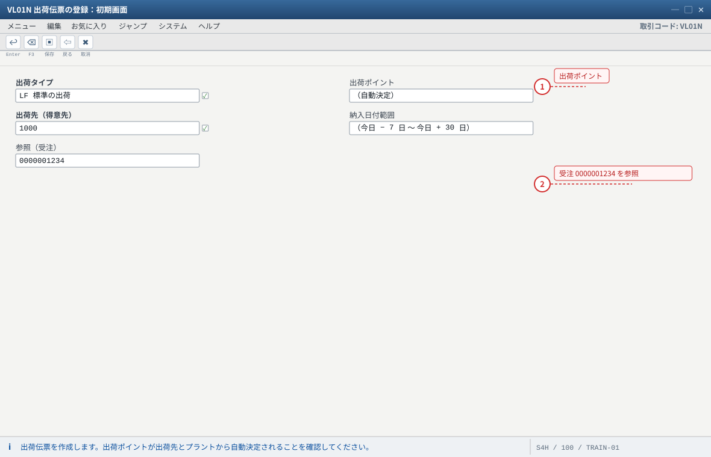
- 1 出荷ポイントが決まらないと出荷伝票は保存できません（前提テストの最初の関門）
- 2 参照に受注番号を入れると納期行が提案され、受注在庫 E が引き継がれます
自システムでの確認：出荷前には受注在庫が入っている必要があります。この順序を飛ばすと PGI が失敗します。
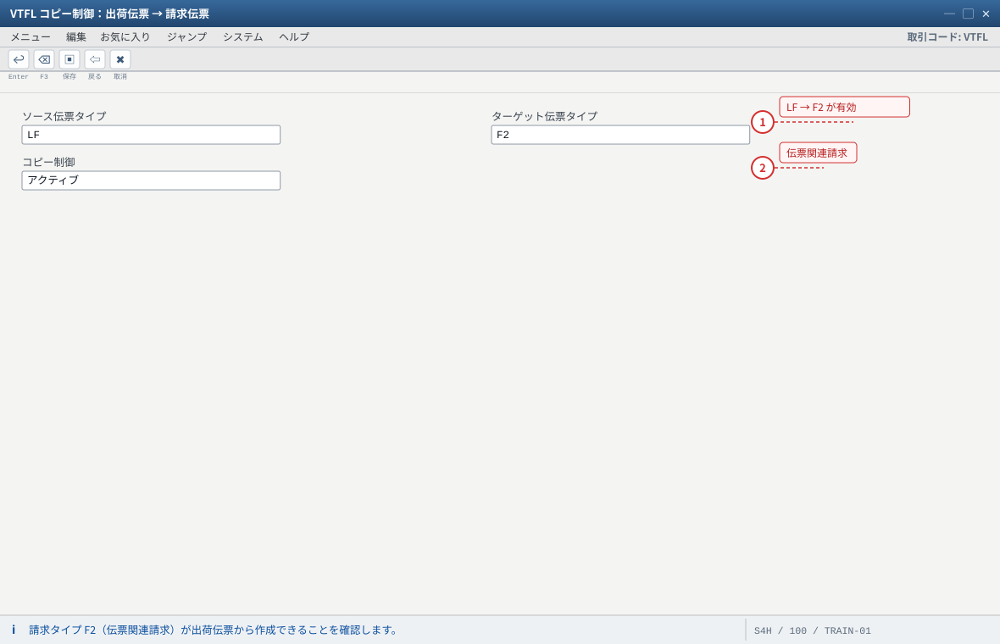
- 1 ここが有効でないと VF01 が出荷伝票を参照できず、請求が作れません
- 2 請求明細カテゴリは「伝票（伝票関連請求）」である必要があります
自システムでの確認：VF01 の請求タイプに F2 が表示されることを先に確かめておくと安全です。
自動転記（OBYC）与受注在庫的会计
OBYC・FB03受注在庫への入庫（101） : 在庫勘定（BSX）が借方 → 受注在庫が評価される場合、金額が在庫に載る
出庫確認（601/PGI） : 売上原価（消費）→ 勘定は OBYC の GBB（汎用変更）系で決定
差異（標準 vs 実績） : 指図決済（KO88/CO88）と差異計算（KKS1 系）で処理
確認の仕方 : 练习④ で PGI 後の伝票番号から FB03 で会計伝票を開き、勘定/金額を見る
OBYC→ 查看BSX（在庫勘定）与GBB（消費・差異）的现有设定（一般已由项目配好）。看不懂没关系，先确认「有设定」。- 练习④ 里把
FB03打开，确认受注在庫的入库/出库都有会计传票，且金额能连上（受注在庫入庫金额 → 出库时的销售成本）。
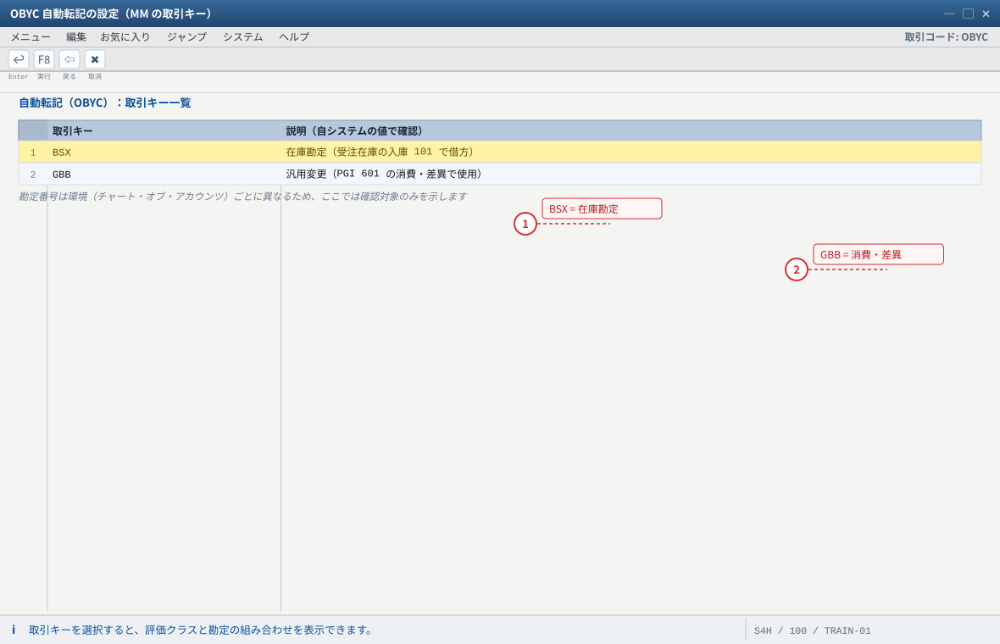
- 1 受注在庫も評価されれば 101 の入庫時に BSX で在庫勘定へ金額が載ります
- 2 PGI 601 の売上原価は GBB 側で決まります。勘定は環境依存なので FB03 で実際の伝票を見ます
自システムでの確認：KO88 / CO88（決済）と KKS1 系（差異計算）。練習④ では FB03 で会計伝票を開いて金額を確認してください。
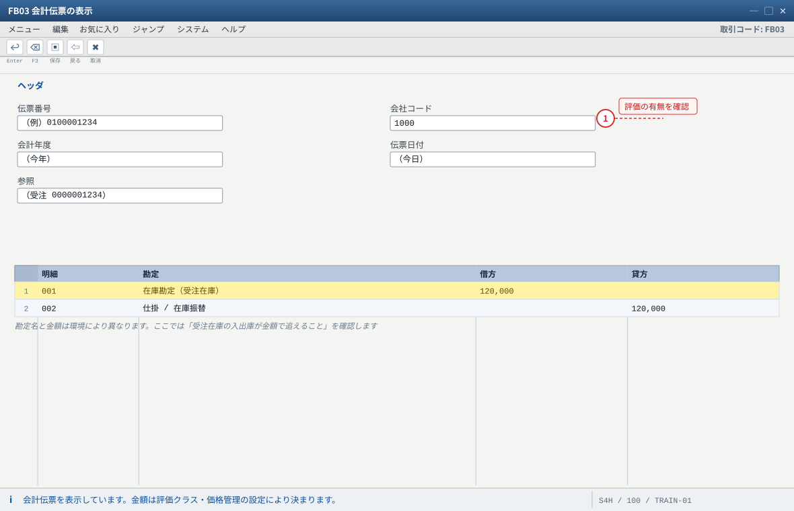
- 1 受注在庫が評価されていない（評価区分が空）と、金額が 0 または勘定が出ないことがあります
自システムでの確認：判読が難しい場合は範囲声明のとおり「有設定・有伝票」を確認できれば十分です。深化は練習⑤ 以降の CO 課題です。
C17 Public Cloud（S/4HANA Cloud Public Edition）差异对照
Public Cloud 的核心差别是「你不能做自定义，但 SAP 已经按 スコープアイテム 交付了 MTO 场景」。对照下表落到具体做法：
| 本教程的 STEP | On-Premise（本站主线） | Public Cloud 的做法 / 限制 |
|---|---|---|
| 整体配置手段 | SPRO / IMG（传输请求） | Configure Your Solution の SSCUI（自助配置）＋ スコープアイテム 激活。伝票タイプ・明細カテゴリ・所要量クラス などの新規作成はできない（提供された範囲のみ） |
| 场景交付 | 自己配为主 | スコープアイテム で交付：BJE（受注生産：完成品販売と最終組立）、IYT（受注生産 + バリアント設定）、1BM（受注生産：半製品計画と組立）、7DM（アドバンスド社内販売 + MTO + VC）。先读 Test Script，它是手上要照做的「手顺」 |
| C6〜C9（明細カテゴリ・纳期行类别） | VOV7/VOV4/VOV6/VOV5 自由新增 | 新規作成は不可（What you see is what you get）。可用的 SSCUI（例：SSCUI 105120「明細カテゴリ別の所要量タイプ決定」）只允许在既有明細カテゴリ上调整映射；SAP 不会为单个租户改动 TAN 的标准映射 |
| C10〜C11（所要量クラス/タイプ） | OVZG / OVZI | 通过 SSCUI 调整可用范围内の设定；MTO 场景下評価付販売伝票在庫（所要量クラス 046、評価区分 M）为前提 |
| C12（計画方針） | OPPJ/OPPS | 基本原则不可改；MTO 场景已由 スコープアイテム 交付（战略 20 / 组立处理 82 的设定开箱可用） |
| C14（MRP 実行） | MD01N（MRP Live）/ MD02 | MRP Live ベースのアプリ（「Schedule MRP Runs」等）。古典 MRP（MD01/MD02/MD03）は提供されない |
| 流程练习（练习①〜④） | GUI 事务码 | Fiori 应用为主，功能对应关系示例：受注の登録＝VA01 相当、在庫/所要量リスト＝MD04、品目入庫の転記＝MIGO、出荷伝票の登録＝VL01N、請求伝票の登録＝VF01。应用名与数量随版本变化，以你的租户为准 |
| 练习可用性 | 可自由建 Z 对象 | 租户里通常不能随意建练习用主数据/传票，需按 Test Script 与培训租户的规则操作 |
配置完了チェックリスト（做完打勾，即可进入流程练习）
- C0
VA01能进入 販売エリア 1000/10/00；得意先 1000 有販売エリアビュー与出荷先。 - C1 部品
ZMTO-RM01（100 PC）/ZMTO-RM02（500 PC）在MB52可见非限制使用库存。 - C2
MM03完成品：販売組織2 品目カテゴリグループ有值、MRP3 戦略グループ = 20、MRP4 個別/包括所要量 = 個別所要量のみ、MRP1 手配タイプ = E。 - C3
CS03能显示 BOM（RM01×2 / RM02×8）；CA03能显示工程 0010。 - C4
VK13能查到 PR00 = 12,000 JPY / PC（得意先 1000 + 品目 ZMTO-FG01）。 - C5
Z001已在 明細カテゴリグループ 中（説明可见）。 - C6
VOV7中ZTAK存在且 特別在庫 = E、価格設定 = X、納入日程行許可 = ON。 - C7
VOV4中OR + Z001 +（空）+（空） → ZTAK存在。 - C8
VOV6中ZCP存在且 所要量転送 = ON（TVEP-BEDSD可用SE16N佐证）。 - C9
VOV5中ZTAK + PD → ZCP存在。 - C10 能打开所要量クラス
040（及046）并说明「個別在庫 / 評価」两项的差别。 - C11 能说明所要量タイプ的决定顺序（戦略グループ优先 →
OVZI兜底），并指出KE → 040这一条链。 - C12
OPPS中20（受注生産）与82（組立処理：KMFA/201/PP04）的差别已记录。 - C13
CO09能显示ZMTO-FG01的可用量与要素。 - C14 已确认
MD04中计划手配的「在庫区分」为受注在庫（E）。 - C15〜C16 出荷タイプ
LF/ 請求タイプF2/ コピー制御VTFL/OBYC的设定「存在且可用」已确认。 - 所有改动都在你的カスタマイジング依頼里，可回滚。